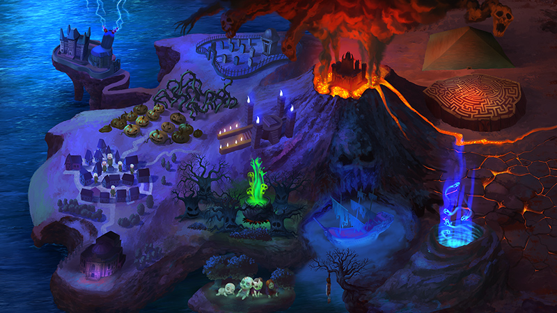

J'ai pas vraiment codé ce site, j'ai demandé de l'aide à Claude (l'IA), en revanche je me suis bien fait ch*er à mettre touuutes les images à la main pendant des heures et des heures (il doit sans doute y avoir un moyen plus efficace mais je suis incompétent), donc si ça peut servir à quelqu'un d'autre, autant partager... Je tiens aussi à préciser que cette idée est totalement inspirée du travail de la personne qui a fait ce site. Aussi, c'est fort probable qu'il y ait des erreurs et oublis, je suis désolé si c'est le cas et que ça impacte votre/vos explo(s), n'hésitez pas à me les faire remonter si vous en remarquez.
